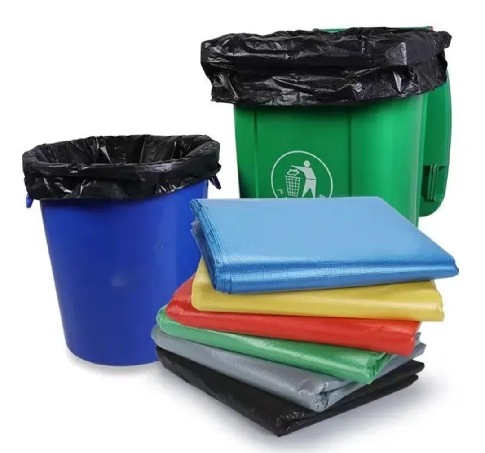
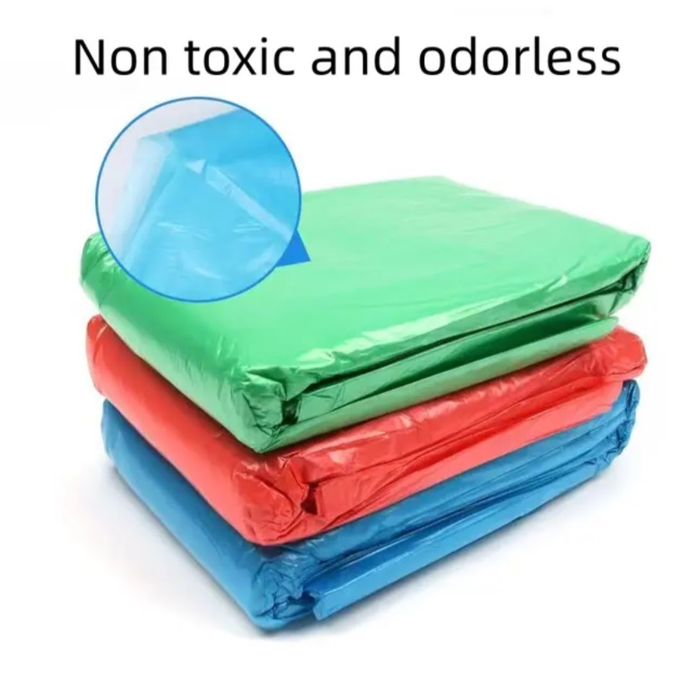
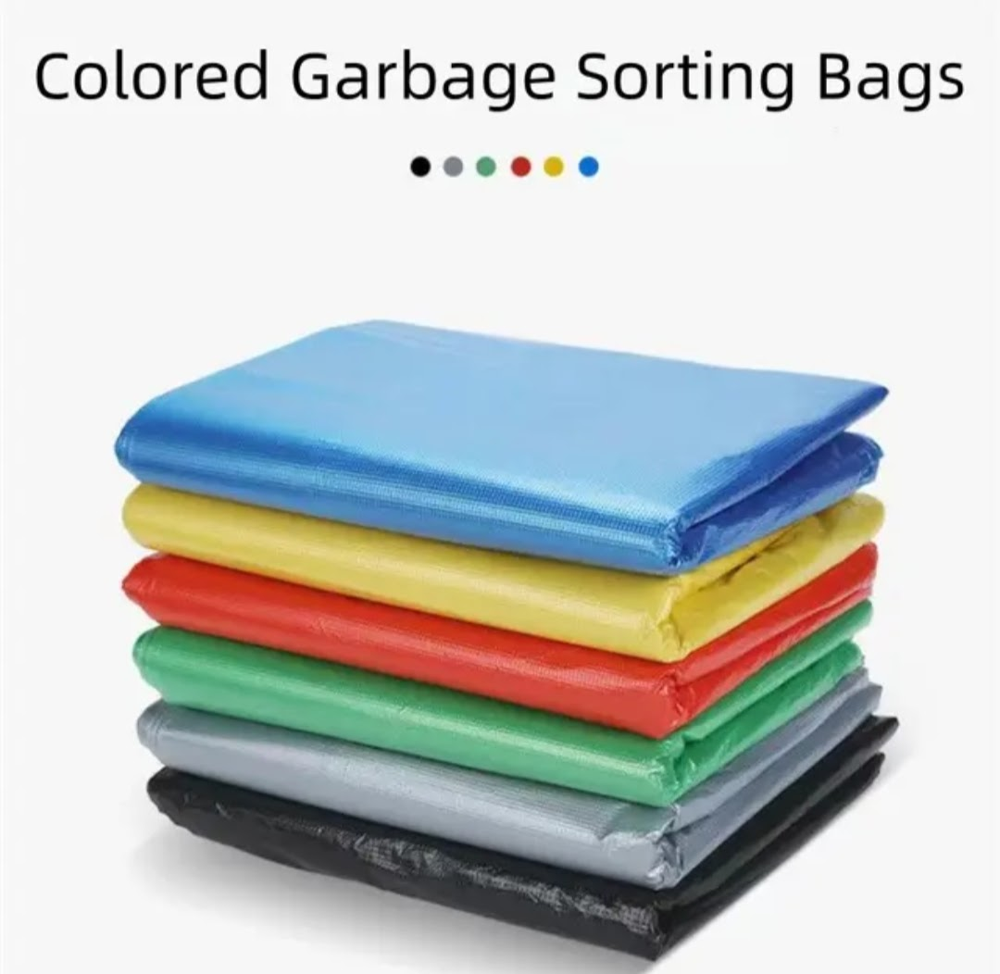
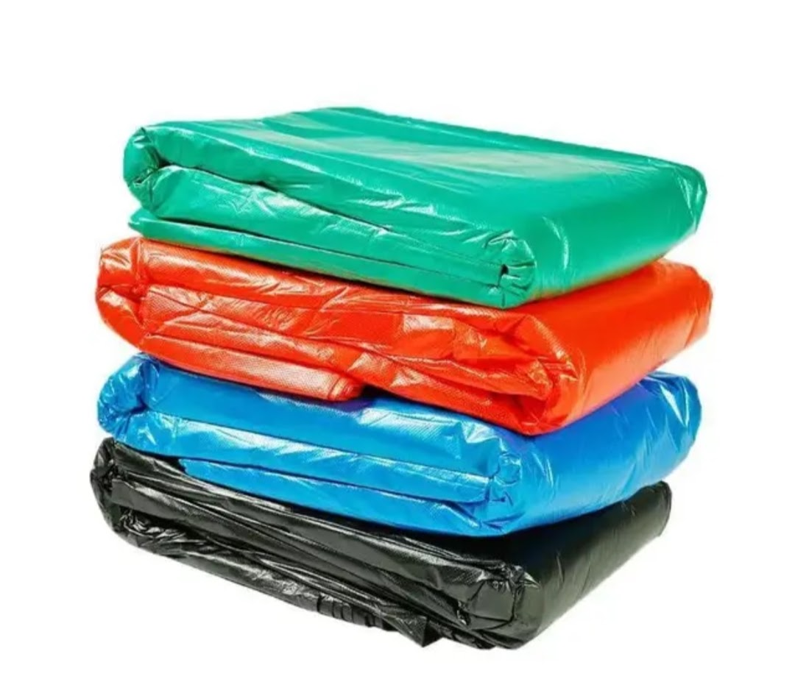
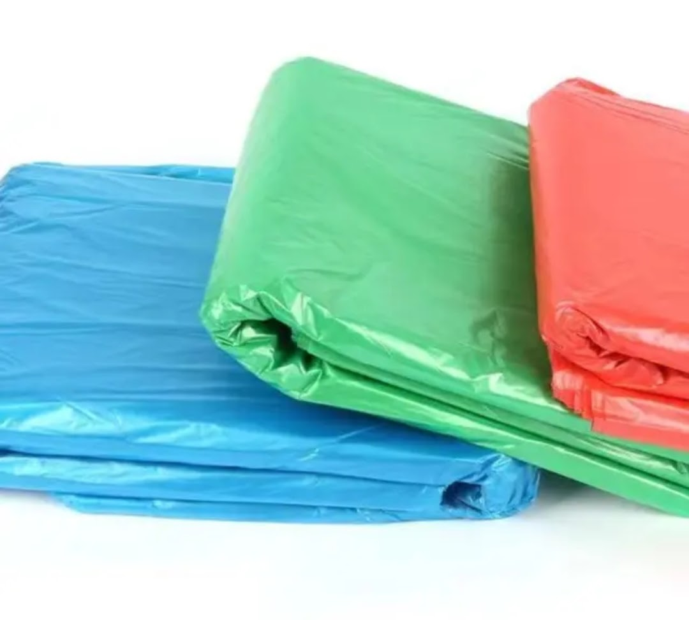
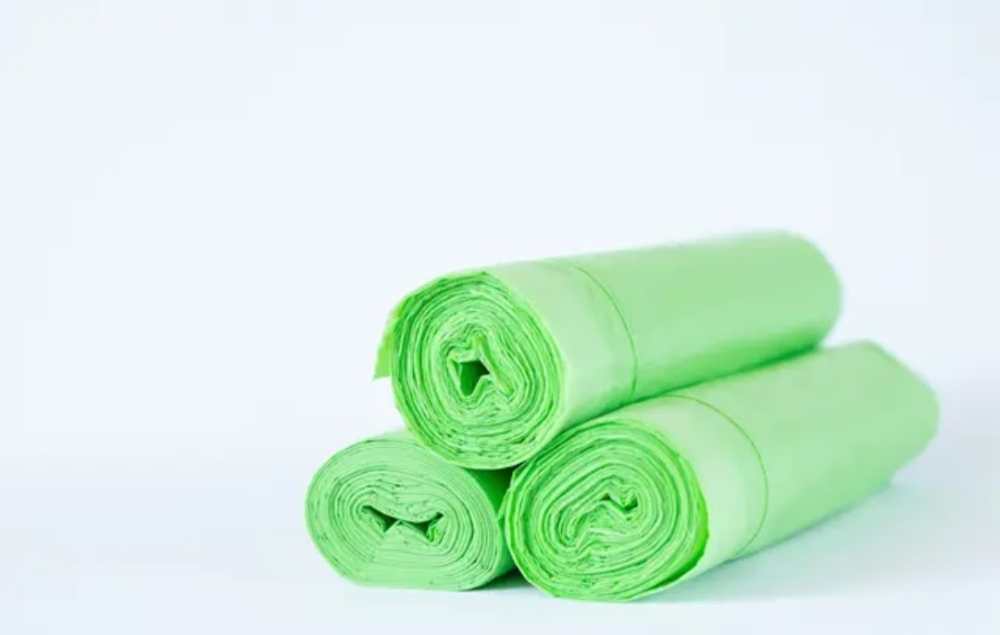
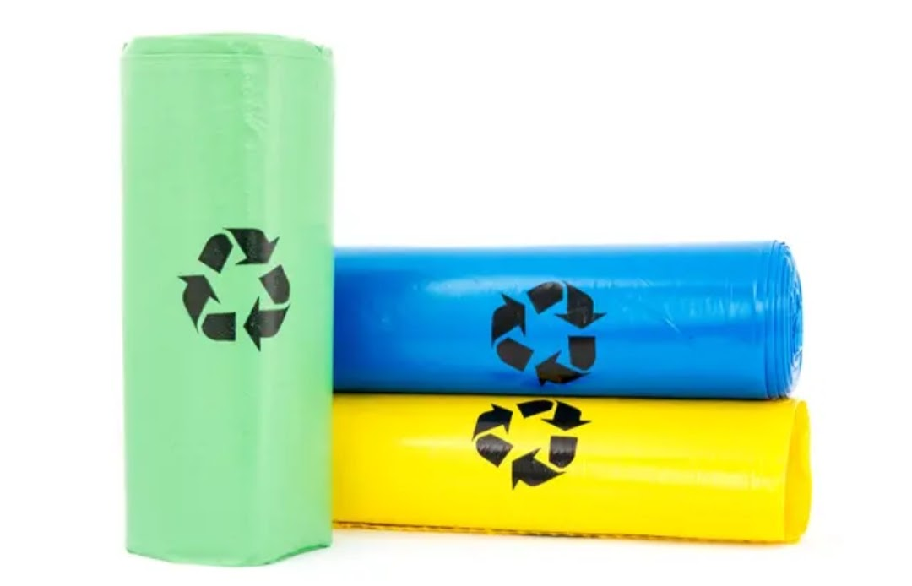

Product Overview
Oxo Biodegradable Garbage Bags are specially manufactured
plastic waste bags that contain additives to accelerate
degradation under suitable environmental conditions.
These bags are designed for organized waste collection in
homes, offices, commercial spaces, and institutions while
maintaining strength, leak resistance, and ease of handling.
Key Features
- Oxo-biodegradable additive blended material
- Good tensile strength and tear resistance
- Leak-proof and hygienic waste containment
- Available in multiple sizes and thicknesses
- Suitable for dry and mixed waste collection
Specifications
- Material: LDPE / HDPE with oxo-biodegradable additive
- Form: Rolls or loose bags
- Thickness: As per micron requirement
- Colour: Black, Green, Blue (custom options)
- Usage: Waste collection and disposal
Applications & Use Cases
- Household garbage collection
- Commercial and office waste disposal
- Hospitals, hotels, and institutions
- Shops, malls, and public spaces
- Bulk waste handling environments
Best Suited For
- Municipal waste collection systems and contractors
- Housing societies and apartment complexes
- Commercial establishments with daily waste output
- Institutions following organized waste segregation norms
Selection Note
For Indian operating conditions, micron thickness selection
should be based on waste type, moisture content, and handling
frequency. Higher micron bags are recommended for wet and
mixed waste to avoid tearing during lifting and transport.
Proper segregation improves hygiene and bag performance.
Commonly Used Along With
- Plastic or metal garbage bins
- Colour-coded waste segregation containers
- Bin liners and waste handling accessories
Product FAQs
-
Are oxo biodegradable garbage bags allowed in India?
Usage depends on local municipal regulations. Buyers should verify
current state and city guidelines, as some regions restrict certain
types of oxo-degradable plastics.
-
How do oxo biodegradable bags degrade?
These bags contain additives that help break down plastic into
smaller fragments under heat, oxygen, and UV exposure over time.
-
Are these bags suitable for wet waste?
Yes, provided the correct micron thickness is selected. Higher
micron bags are recommended for wet and mixed waste to prevent leaks.
-
Can these bags be used for municipal waste collection?
Yes. They are commonly used by housing societies and contractors,
subject to compliance with local waste management norms.
-
Do oxo biodegradable bags decompose like compostable bags?
No. Oxo biodegradable bags are different from compostable bags and
require environmental exposure to degrade; they are not compostable.
-
Are bulk rolls available for institutions and contractors?
Yes. Bulk quantities, custom sizes, colours, and micron options are
available for commercial and institutional buyers.